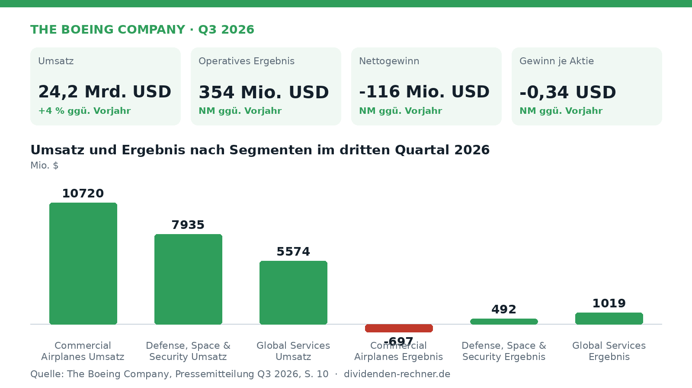
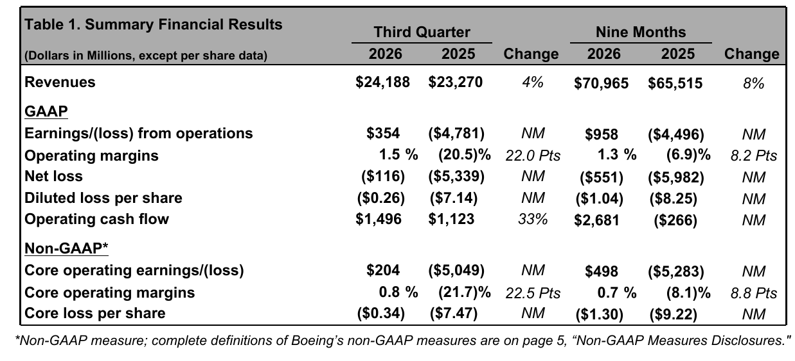

Quartalszahlen

Boeing setzt 24,2 Milliarden um und bleibt operativ im Minus
Boeing verzeichnet im dritten Quartal 2026 einen Umsatz von 24,2 Milliarden US-Dollar, schreibt jedoch operativ weiterhin rote Zahlen.

Im dritten Quartal 2026 erzielte The Boeing Company einen Umsatz von 24,2 Mrd. USD, was einem Zuwachs von vier Prozent gegenüber dem Vorjahreszeitraum entspricht. Dennoch belasteten anhaltende Kosten- und Lieferkettenprobleme das Ergebnis, sodass ein operativer Verlust ausgewiesen wurde.

Eigene Darstellung nach Daten aus: The Boeing Company, Quartalszahlen Q3 2026 vom 2026-10-27.Licht und Schatten in den Segmenten

Zusammenfassende Finanzergebnisse Q3 2026. Quelle: The Boeing Company, Quartalszahlen Q3 2026 vom 2026-10-27, S. 1. Ausschnitt nur zugeschnitten, sonst unverändert.Die Verkehrsflugzeugsparte Commercial Airplanes verbuchte im Berichtszeitraum einen Umsatz von 10,7 Mrd. USD, blieb jedoch mit einem operativen Verlust von 697 Mio. USD tief in den roten Zahlen, weil ein ungünstiger Auslieferungsmix und höhere geschätzte Kosten für Lieferketten und künftige Produktionsanpassungen das Geschäft belasteten. Demgegenüber stand das Rüstungs- und Raumfahrtsegment Defense, Space & Security mit einem Umsatz von 7,9 Mrd. USD und einem operativen Ergebnis von 492 Mio. USD, gestützt durch einen Erlös aus einem Anlagenverkauf. Die Sparte Global Services steuerte einen Umsatz von 5,6 Mrd. USD bei.
„Recent milestones, including certification of the 737-7 and 737-10 and selection to design and build the Navy’s sixth-generation fighter aircraft, are important steps as we continue building on our progress.“
— Kelly Ortberg, President und Chief Executive Officer
Operativer Cashflow und Verschuldung
Der operative Cashflow belief sich im dritten Quartal auf 1,5 Mrd. USD und profitierte von Einweihungsslot- und Betriebskapitaleffekten, obwohl Belastungen durch Zahlungen im Zusammenhang mit dem Justizministerium das Bild eintrübten. Die Zahlungsmittel und kurzfristigen Anlagen beliefen sich zum Quartalsende auf 20,7 Mrd. USD, während die konsolidierten Schulden bei 45,9 Mrd. USD verharrten.
Ausblick und Risiken
Für die kommenden Monate bleibt die Stabilisierung der Produktion bei den Programmen 737 und 787 im Fokus des Managements. Risiken bestehen weiterhin in der Bewältigung von Lieferkettenengpässen, regulatorischen Auflagen bei Neuzulassungen und potenziellen Kostensteigerungen bei festpreisbasierten Rüstungsprojekten.
Die wichtigsten Zahlen im Überblick
| Kennzahl | Wert | Veränderung zum Vorjahr | Quelle |
|---|---|---|---|
| Umsatz | 24,2 Mrd. USD | +4 % | S. 1 |
| Operatives Ergebnis | 354 Mio. USD | NM | S. 1 |
| Nettogewinn | -116 Mio. USD | NM | S. 1 |
| Gewinn je Aktie | -0,34 USD | NM | S. 1 |
| Operativer Cashflow | 2,7 Mrd. USD | NM | S. 1 |
Quelle: The Boeing Company, Quartalszahlen Q3 2026 vom 2026-10-27. Rechenwege eigene Berechnung. Keine Anlageberatung.
Hinweis: Dieser Text dient der allgemeinen Information und ist weder Anlage-, Steuer- noch Rechtsberatung. Kapitalanlagen sind mit Risiken verbunden, bis hin zum Totalverlust.